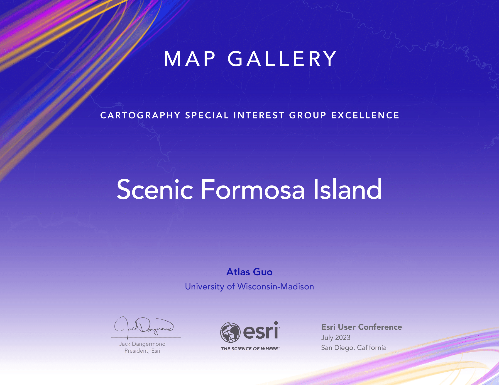
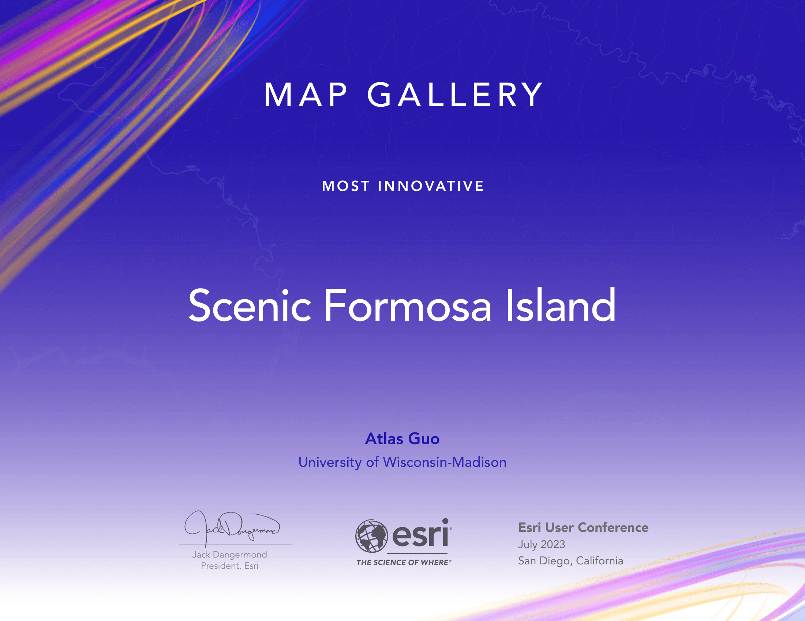

Trilingual Map of Taiwan, “Scenic Formosa Island”
Most Innovative Map and Cartography Excellent Award in 2023 Esri User Conference
 View Full Image
View Full Image
In recent years, Taiwan once again becomes a worldwide focus due to global politics.
I have been to Taiwan only once during a one-month visiting program to Chinese
Culture University (Taipei) in 2013, and I have been so fascinated by the natural
and cultural landscape of this beautiful island. This non-political map aims at
revealing the physical and cultural wonders of Taiwan. Putting aside all the
disputes, let us simply cherish the beauty and peace of this scenic island, Formosa.
As we learned in cartography class, all maps are politics and no map could be truly
non-political, but I really wish to invite broader audiences from all over the
world, to know more about this beautiful island, just like what its original name
means, Formosa.
In this map, all the designs serve for one purpose: to reveal the
beauty of this island, and get rid of politics. Different from regular "North-Up"
map, this map uses orthographic projection, imitating a bird view from space. It
might happen to look like viewing from mainland China, but arguably, this
perspective has nothing to do with politics, but simply because of the nature: the
overall shape of the island runs north-to-northeast and south-to-southwest, and its
general topographic pattern is flat on the west and hilly on the east. Non-political
does not mean non-humanistic, so this map also cares about people living in Taiwan,
especially the local indigenous populations. Additionally, this is a "trilingual"
map, or a map "In Three Scripts".
This map won the 2nd place (hornorable mention) at UW-Madison's 14th
Annual Digital Salon, and is physically displayed during 2023-2024 at
UW-Madison College Library
(see picture alove).


At 2023 Esri User Conference, this map won the Most Innovative Map and
Cartography Special Interest Group
Excellence Award (see Map Gallery).
 As one of the representatives of the
United States, this map is on International Cartographic Exhibition of International
Cartographic Conference at Cape Town, South Africa (2023).
As one of the representatives of the
United States, this map is on International Cartographic Exhibition of International
Cartographic Conference at Cape Town, South Africa (2023).

Below is a much detailed version of introduction with cartographic
techniques:
[Projection]
Different from regular “North-Up” map, this map uses orthographic “World From Space”
projection, imitating a bird view from space. It might happen to look like viewing
from mainland China, but arguably, this perspective has nothing to do with politics,
but simply because of the nature: the overall shape of the island runs
north-to-northeast and south-to-southwest, and its general topographic pattern is
flat on the west and hilly on the east. Therefore, this specific perspective could
better display the terrain while still partly keeping the north-south direction so
that audience would not totally get lost. On the bottom-right corner, a specially
designed scalebar is put alongside with the graticule to indicate the directions and
distances simultaneously. Additionally, the map extent is subtly set to minimize the
potential political controversies.
[Locator Map]
To better illustrate this unusual map projection, the locator map (globe) on the
bottom-left also displays the extent of the main map. In agreement with the
apolitical theme, the locator map only labels the physical features, such as the
marine areas (oceans, seas, straits), islands, peninsulas, and the globe graticule.
The locator map’s light hillshade on lands is simply an ArcGIS Online layer.
[Terrain]
The highlight of this map is undoubtedly the shaded terrain. The eye-catching
hillshade is rendered after various steps based on the 30-meter Digital Elevation
Model (DEM) data. Specifically, it is a combination of 20 layers, including the raw
DEM layer, 5 blurred DEM layers, 6 slope layers, 6 hillshade layers, 1 slope
hillshade layer, and a satellite imagery layer. They are delicately displayed in a
specific order, with different settings of blend mode (normal, luminosity, overlay,
soft light, multiply) and opacity, leading to this adorable rendering. In terms of
the specific techniques, great credit should be attributed to Esri’s cartographer
John Nelson, whose articles and videos about hillshade rendering help lay a solid
foundation of this hillshade. Additionally, a generalized dashed contour line layer
is displayed at a 1000-meter step, and for the bathymetry, several isobaths are
generalized and displayed together with the pre-rendered bathymetric hillshade
layer.
[Typography]
The typography of various labels is adjusted according to the various types and
classes of geographic features, but also modestly enough to minimize its visual
hierarchy so that the terrain could still pop up enough. Physical features include
oceans, seas, straits, channels, islands (islets), capes, mountain ranges, mountain
peaks, volcano groups, hills, plains, basins, plateaus, rivers, lakes (reservoirs),
etc. Culture features are very mildly labeled, including major cities and harbors.
All texts of multiple scripts (languages) in this map are using Microsoft YaHei font
family for visual legibility and aesthetics.
[Inset Map]
Non-political does not mean non-humanistic. This map also cares about the people
living in Taiwan, especially the local indigenous populations. The top-right inset
map illustrates the distribution of 16 indigenous groups, together with the local
administrative unit (city and county) of different geographical regions (northern,
central, southern, eastern).
[Element]
As a map focusing on the physical geography, some geographical facts about Taiwan
are places on the negative space, such as area, area rank, west-east width,
north-south length, coastline length, highest points, and a brief summary of the
mountains. The northernmost, southernmost, easternmost and westernmost locations of
Taiwan Island are also labeled.
[Language]
As stated in the title (“In Three Scripts”), all texts are displayed in the order of
English, Chinese (traditional characters) and Chinese (simplified characters). When
in some cases the two Chinese scripts are the same, then they will be combined for
visual simplicity. Properly speaking, the traditional and simplified Chinese
characters are the two writing forms or scriptures of the same language, therefore
this map is titled “In Three Scripts” instead of a “Trilingual” one. Note that many
places in Taiwan have more than one Latinization in spelling at different historical
times, therefore only the relatively modern and formal one will be adopted in this
map after careful comparison, for the sake of wider spread in global audiences.
[Data Source]
The data source for the terrain hillshade is NASA 30-meter SRTM dataset. Other data
source includes Esri ArcGIS Online (satellite imagery, water features, bathymetry),
Wikipedia (geographic facts, multi-lingual names of geographic features), and Taiwan
Indigenous People’s Knowledge Economic Development Association, etc.
[Disclaimer]
I, the only author of this map, am originally from mainland China. I’ve been to
Taiwan only once during a one-month visiting program to Chinese Culture University
(Taipei) in 2013, and I have been so fascinated by the natural and cultural
landscape of this beautiful island. As we learned in cartography class, all maps are
politics and no map could be truly non-political, but I really wish to invite
broader audiences from all over the world, to know more about this beautiful island,
just like what its original name means, Formosa.
 On Apr 3, 2024, a 7.4-magnitude earthquake hit Taiwan, with epicenter at Hualien,
which is the biggest one on Taiwan's record in last 25 years. I made this news map
of 2024
Taiwan Earthquake based on my Taiwan map.
On Apr 3, 2024, a 7.4-magnitude earthquake hit Taiwan, with epicenter at Hualien,
which is the biggest one on Taiwan's record in last 25 years. I made this news map
of 2024
Taiwan Earthquake based on my Taiwan map.